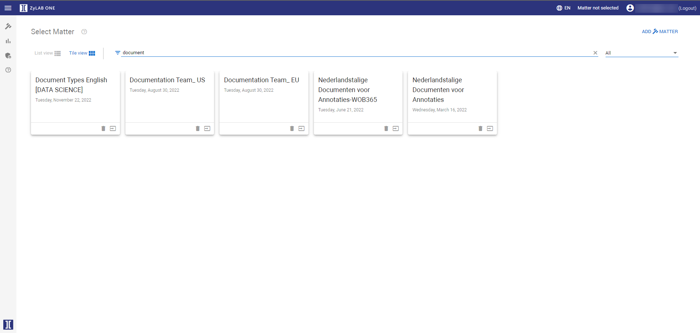

Browse to your ZyLAB ONE website. If you do not know the correct address anymore, view your invitation email or contact your Administrator. If you did not receive an invitation email, please check your Spam or Trash folder.
The Login screen appears.
Enter your user name and password. If you do not know your user name and password, contact your Administrator.
The Select Matter screen appears. In the example below we searched on the matter name using the Search Filter:

If no matter is available, create one via Create Matter.


 to select another matter.
to select another matter.